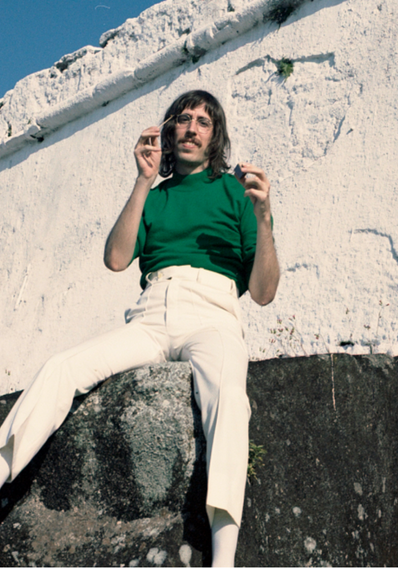
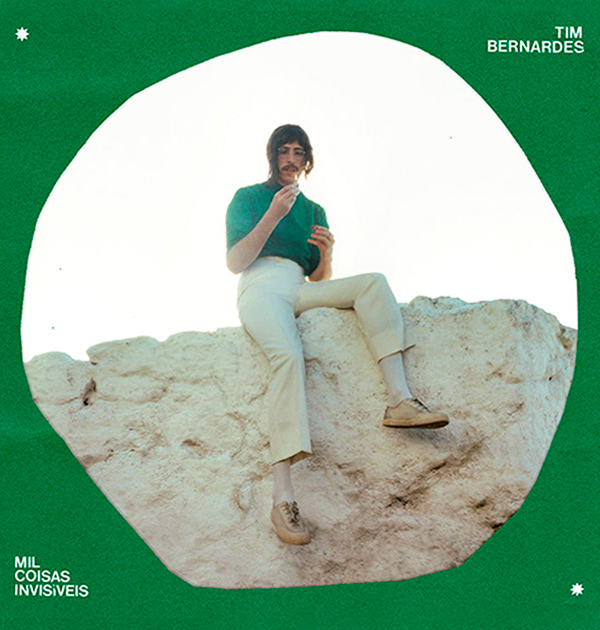

Formada em 2009, a banda O Terno se tornou um dos nomes mais relevantes do rock brasileiro. Composta por Tim Bernardes, Biel Basile e Guilherme D'Almeida, o trio é conhecido por sua sonoridade única, misturando rock psicodélico e MPB. O Terno serviu como o principal campo de experimentação sonora de Tim, sendo um pilar fundamental em sua carreira.
O Terno

Carreira Solo
Recomeçar (2017)
Esse álbum de estreia marcou a transição de Tim Bernardes para sua carreira solo, revelando um lado mais íntimo e reflexivo de sua composição. Lançado com grande aclamação da crítica e público, Recomeçar é um trabalho que mistura a sofisticação da MPB e a melancolia do folk, com arranjos delicados e letras que exploram temas como solidão, recomeços e a busca por um novo sentido.

Mil Coisas Invisíveis (2022)
Com Mil Coisas Invisíveis, Tim Bernardes expandiu sua sonoridade, incorporando elementos de música orquestral e folk progressivo em um trabalho ainda mais grandioso. O álbum, aclamado internacionalmente, aprofunda-se em temas existenciais e filosóficos, convidando o ouvinte a uma viagem sonora e introspectiva. É um disco que consolida a maturidade do artista e sua capacidade de criar paisagens sonoras complexas e emocionantes.